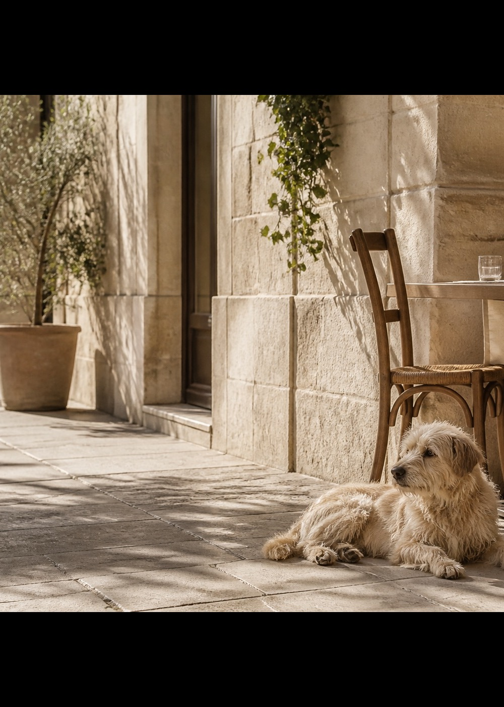

The Dog
Friendly Guide
One life. Lived together.

Curated places. Real moments.
For you and your dog.
Explore the Guide
Website
Paris Guide
Google Maps Collection
Copenhagen Guide
Google Maps Collection
Latest on the Journal
Coco Was There
Follow us on Instagram
© The Dog Friendly Guide